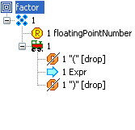
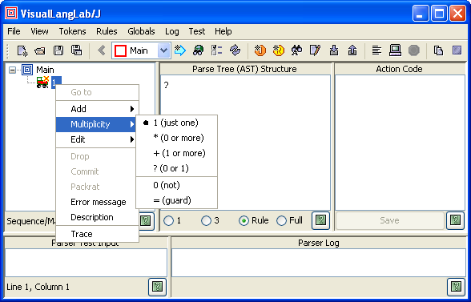
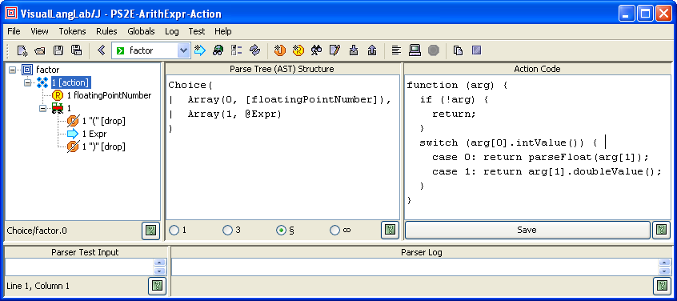
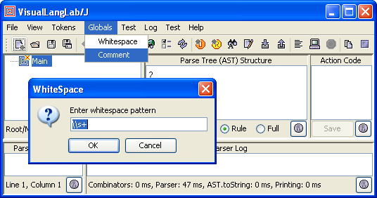

|
For Ver-10.10 or higher only! If you are using an older version, follow this tutorial instead. Beginning Ver-10.01, the title bar of the About VisualLangLab dialog box displays the version number. The latest jar file can be downloaded here: VLL4J.jar. |
VisualLangLab depicts parser-rules as visual trees with distinct icons for different grammar elements. As an example, consider the following arithmetic expression parser grammar from section 31.1 of Programming in Scala.
expr ::= term {"*" term | "-" term}
factor ::= floatingPointNumber | "(" expr ")"
term ::= factor {"*" factor | "/" factor}
The figures below show how these parser clauses are represented within VisualLangLab. Although there are details (such as the definition of floatingPointNumber) not explained here, the correspondence between the textual parser-rules and the graphical grammar-trees should be quite obvious.
| expr | factor | term |
|
 | |
The following sections explain the icons and their annotations, and how VisualLangLab's menu-bar and tool-bar, and the grammar-tree's pop-up menu are used to create or edit the grammar tree.
Grammar-trees are assembled from grammar-tree nodes of different types. Each node type is displayed using a characteristic icon that suggests its type and purpose. Before reading about how a grammar-tree is created or edited, make sure that you understand the icon types and their annotations (the text following each icon).
| Non-terminals | |
 | Root - used for the root node of every grammar tree |
 | Choice - used as the parent of a group of alternatives |
 | Sequence - used as the parent of a sequence of items |
 | RepSep - parent of a sequence of similar items (specified by first child node) separated by text specified by the second child node. For more details, see descriptions of the repsep() and rep1sep() combinators in the Scala API's Parsers class. |
 | Reference - invokes another named parser |
| Terminals | |
 | Literal - matches a specified literal token |
 | Regexp - matches a specified regex token |
 | Token wildcard - a pseudo-token that matches any other defined token, useful for error handling strategies |
| Utility nodes & Icon overlays | |
 | Semantic predicate - succeeds or fails depending on the run-time value of an expression |
 | Commit - displayed on top of a node that has the commit annotation |
 | Error: indicates an error in the associated node or rule |
The first annotation is a 1-character flag that indicates the node's multiplicity -- the number of times the corresponding entity may occur in the parser's input. You can see examples of its use everywhere in the built-in Sample Grammars. Multiplicity has one of the following values:
Note: The last two values ("0" and "=") are used to implement syntactic predictes and have no influence on the information gathered by the parser (into to AST or parse-tree). The names not and guard are inspired by functions of the same name in the Scala Parsers class.
The second annotation is the name of the entity. The value displayed depends on the type of the node as described below. (The remaining icon types do not have a name)
All other annotations, described below, are optional. If any of the optional annotations are present, they are enclosed within square brackets.
Finally, if the node has a description, it is displayed last within parenthesis.
When VisualLangLab is started,
or a new rule is created by clicking the New rule
( ) toolbar button or
choosing Rules->New
from the main menu, a new grammar-tree containing just
the root-node is created and displayed.
Figure-2 below shows such a grammar-tree. The figure also shows the context-menu
that pops up when any node of a grammar-tree is right-clicked.
) toolbar button or
choosing Rules->New
from the main menu, a new grammar-tree containing just
the root-node is created and displayed.
Figure-2 below shows such a grammar-tree. The figure also shows the context-menu
that pops up when any node of a grammar-tree is right-clicked.

Figure-2. Grammar-tree of newly created parser-rule
The new parser-rule can now be defined fully by recursively adding other
nodes to the root-node. Nodes are added to an existing node by right-clicking
it, and choosing Add -> ??? from the pop-up menu (the ??? represent
the node type, chosen from Add's sub-menu shown in Figure-2 above).
The name of the new parser-rule created when
VisualLangLab is started is always Main.
This name can be changed by selecting Rules -> Rename rule from the main menu,
or by clicking the Rename rule toolbar button
( ).
).
You will notice that the Add menu and its sub-menus enforce applicable rules by becoming disabled whenever the context forbids their action. For example, only one node is allowed to be added to a root-node, and a Predicate node can only be added to a Sequence node.
When Token is selected from Add's sub-menu, a list of available tokens is displayed from which you may select the desired one. Because of this, a parser project should ideally be started by first creating all the required tokens. Token creation is described below.
When Reference is selected from Add's sub-menu, a list of known parser-rules is displayed from which you may select the desired one. When working with a grammar that has mutually recursive parser-rules, you will occassionally have to suspend work on one parser-rule (leaving it incomplete), create another parser-rule, then return to continue work on the first parser-rule. VisualLangLab allows you to leave rule definitions incomplete to support this mode of work.
Once a node is added to the grammar-tree, its properties can be tuned as needed by adding annotations. The pop-up menu in Figure-3 below shows the annotations that may be set/changed. Not all the menus are enabled as the context forbids the use of certain annotations (drop, commit, and packrat are disabled here).

Figure-3. Grammar-tree pop-up menu for annotations
The annotations of any grammar-tree node may be changed at any time. The effect of any change on the parser-rule happens immediately on the fly without delay or the need for any other intervention.
Figure-4 below shows how action-code is associated with a grammar-tree node. Proceed as follows: select a grammar-tree node ("A" in the figure), enter the code under Action Code (at "B"), click the Save button (at "C", is enabled whenever the text is changed).

Figure-4. Associating action-code with a grammar-tree node
If the code entered has errors, a dialog box with information about the
error is displayed. Correct the errors, and click the Save button
again. Remember to click the toolbar's Save button
( ) or
select File -> Save from the main menu. Programming information about
action-code can be found in AST and Action Code.
) or
select File -> Save from the main menu. Programming information about
action-code can be found in AST and Action Code.
Since VisualLangLab uses a design based on Scala's parser combinators, parser-rules can be recursive or mutually recursive. However, left-recursion can only be handled by packrat parsers, so the grammar-tree's root is left-clicked, and the context-menu should be used to add the packrat annotation to left-recursive grammar-rules as shown in Figure-6 below.
Figure-6. Adding the packrat annotation
In the grammar shown above, the token NUMBER is defined as the regular expression \\d+. It can parse strings like 3 + 5 and 7 - 9 etc. Trying to run it without the packrat annotation causes a stack-overflow error.
VisualLangLab can detect certain errors in the parser-rule, and flags the root-node of such grammar-trees with the error icon (see Icon Overlays in table above). The root-node's tool-tip text gives a description of the error condition.
You can save the created grammar by clicking the toolbar's Save button
()
or selecting File -> Save from the main menu. A file-chooser dialog will be
presented into which you may enter the desired file-name. When a grammar is saved
in this way, all of the tokens and rules (parser-trees) are saved as an XML document.
By convention a file containing a saved VisualLangLab grammar has a .vll or .VLL extension.
A saved grammar can be opened again for further editing, modification, or testing.
A saved grammar file is opened by clicking the toolbar's Open button
( )
or selecting File -> Open from the main menu, and choosing the file in the file-chooser presented.
)
or selecting File -> Open from the main menu, and choosing the file in the file-chooser presented.
A saved grammar can also be used from a client program to create and use the corresponding parser. This is described in Using the API.
An existing parser-rule can be modified just as easily as creating a new one. The annotations of existing tree nodes can be changed by using the same pop-up menu shown in the figures above. Structural changes to a grammar-tree can be effected by using the Edit menu shown in Figure-7 below.

Figure-7. The grammar-tree Edit menu
The Copy and Paste menus simulate a clipboard for grammar-trees
(or sub-trees), and speed up the grammar creation process.
Modifications and structural changes happen just as quickly and effortlessly
as parser-rule creation. Remember to click the toolbar's Save button
() or
select File -> Save from the main menu.
Every parser uses a well-defined set of tokens to represent its terminal symbols. VisualLangLab's tokens are of two sorts: literals and regexs. A literal token is specified with (and matches) a literal text pattern, while a regex token is specified with a regular-expression pattern, and matches any text that matches that pattern.
You create a literal token by invoking Tokens -> New literal from the main menu
(or clicking the toolbar's New literal
 button), entering the token's literal pattern into the
dialog presented (as in Figure-8 below), and clicking the OK button.
button), entering the token's literal pattern into the
dialog presented (as in Figure-8 below), and clicking the OK button.

Figure-8. Creating a literal token
The action depicted in the figure above results in the creation of a literal with the name "+", and matches a literal plus sign. The name is used to refer the token in rules, as seen in Figure-7 above.
The convention of naming literal tokens after their pattern is common, and is supported by all parser-generators that use a script (BNF, EBNF, etc.) to define their grammar. However, you can also choose not to use this default naming convention by providing a different name. To explicitly name a token, you should enter the token's name before its pattern in the dialog. The name and token should be separated by one or more spaces. An explicitly provided name should follow the convention of Java names.
You create a regex token by invoking Tokens -> New regex from the main menu (or clicking the toolbar's New regex () button), entering the token's name and pattern into the dialog presented (as in Figure-9 below), and clicking the OK button. Unlike literal tokens, regex tokens must have a user-provided name.

Figure-9. Creating a regex token
You should enter a token name and the token's pattern separated by one or more spaces
as shown above.
The pattern is treated as a Java regular expression
pattern.
Note that the pattern should be written as it would be in a literal
String in a Java program (hence the two back-slash characters in the
"\\d+" example above). Patterns that match the empty string (e.g. "A*") are not accepted.
Token names should ideally have high mnemonic value, and are conventionally in all upper case.
It is conventional to assign names to regex tokens, but VisualLangLab also allows you to skip the user-specified name, allowing the default name ("\\d+" for the example above) to be assigned instead.
Two tokens may obviously not have the same name. Two tokens may also not have the same pattern part if both of them are either globally scoped or privately scoped (see below).
Two or more Regex tokens will sometimes match the same bit of input. You can assign a priority value to enable disambiguation of such tokens. To assign a priority to a Regex token append a colon, an optional minus sign, and an integer to the token's name as in Figure-9 below.

Figure-9. Regex token with priority
When two or more tokens match the same input, the lexer selects the token with the numerically highest priority. A token without an explicit priority has a priority value of 0. So explicitly assigned priority values can be higher or lower than the default value (positive or negative priority values). Only Regex tokens can have a priority value.
You will sometimes need to edit a token's pattern during development. To choose a token for editing select Tokens -> Edit token from the main menu, or click the toolbar's Edit token () button. A dialog with the list of existing token names is presented. Selecting a token name and clicking the OK button displays another dialog box with a text field containing the pattern text. Edit the pattern as needed and click the OK button.
Literal tokens with a default name may not be edited as described here.
Tokens tend to be reused, so VisualLangLab allows you to create, maintain, and
use token libraries. A useful parser with lots of potentially
reusable tokens can be used to create a token library by selecting
Tokens -> Export tokens from the main menu or clicking the toolbar's
Export tokens ( ) button.
A file-chooser dialog is presented, and a token library is created when you
provide a file name and press the Save button.
) button.
A file-chooser dialog is presented, and a token library is created when you
provide a file name and press the Save button.
Tokens can be imported from a library by selecting
Tokens -> Import tokens from the main menu or clicking the toolbar's
Import tokens ( ) button.
A file-chooser dialog is presented, and all tokens in the selected library are imported
when you provide a file name and press the Open button.
) button.
A file-chooser dialog is presented, and all tokens in the selected library are imported
when you provide a file name and press the Open button.
Tokens libraries are just plain grammar-files without any parser-rule definitions. You can, therefore, use all of VisualLangLab's token management facilities to maintain the contents of token libraries.
As explained in Relationship
with Scala Parser Combinators, literal and regex tokens defined in
VisualLangLab are not based on Scala's
RegexParsers
class. A simple but effective
lexer is used, and
the behavior of the parser (in matching tokens with the input) is quite different
from that of RegexParsers.literal() and RegexParsers.regex().
All Literal tokens are effectively reserved symbols (or keywords), and take precedence over Regex tokens.
All tokens exist in a single global scope, and VisualLangLab does not support scoped tokens. However most scoping needs can be served by a rudimentary, sledgehammer-strength mechanism: Ending a token's name with an underscore (_) places it in its own private scope. When the parser tests for such a token, the lexer does not come into play, so other token definitions (in the global scope) are not considered.
Management of whitespace and comment specifications are handled via procedures launched from Globals -> Whitespace and Globals -> Comment in the main menu as shown in Figure-5 below.

Figure-5. Editing specifications for whitespace and comments
The figure shows the menus displayed under Globals, and also the
dialog box that is presented when Whitespace is chosen.
The dialog box for Comment is similar, except that the default value
is an empty string. The default value for Whitespace, shown in
Figure-5 above, is the regular expression \\s+.
As for regex tokens, the pattern specified for whitespace or comment should be
written as though inside a Java literal String.